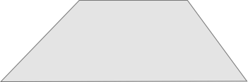
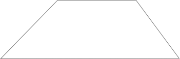
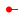
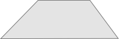

Z轴分层布局说明
Z轴分层布局：底层-主页；顶层-物理按键触发的正在翻译和aiui全覆盖模态；一旦触发正面三个语音按键，无论处在任何界面都将切回到主页。
Z轴

一级页面-主页

2、3、4...级页面
正在识别、翻译...
半模态：设置


系统级的弹窗提醒
1,在正在翻译界面，也是可以下拉设置菜单；
2，在半模态的时候，其实也可以按住按键进行翻译、aiui任务等；
3，正在请求翻译结果的时候，可以切换语种，但切换针对下一次翻译才有效；